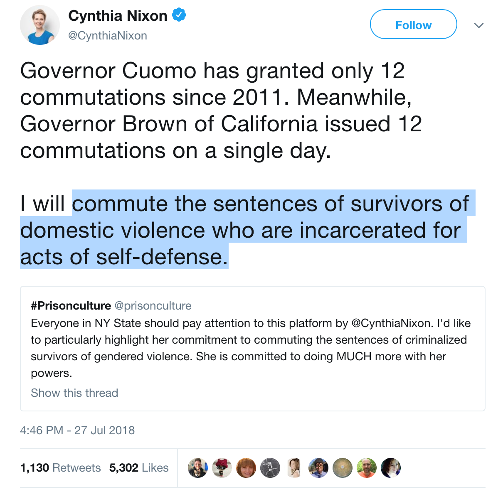
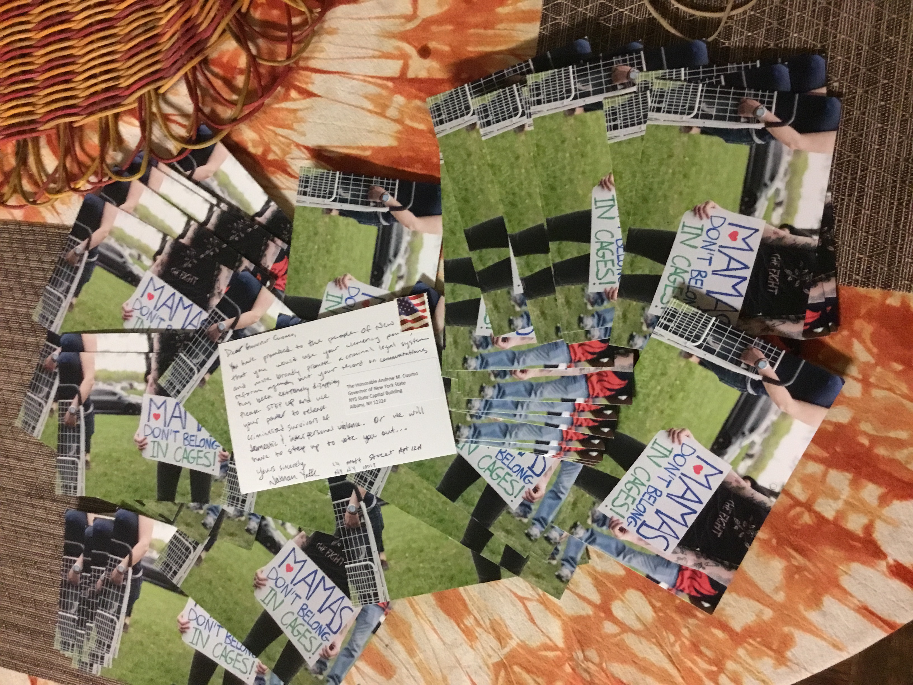

#FreeThemNY
We call on Governor Cuomo to immediately use his clemency powers to free criminalized survivors of gender violence held in prisons in New York.
End the criminalization of survivors of domestic and sexual violence!
Read survivors' stories!
Background
Throughout his time in office, Governor Cuomo has granted pardons to just 163 people, and commuted the sentences of only a dozen people.
These numbers are pitifully low compared to the more than 50,000 people held in prisons across New York State.
The New York State Constitution grants the governor power to pardon or commute any sentence, at any time, for any reason. Our campaign calls on Governor Cuomo to use the powers of his office to immediately free criminalized survivors of gender violence!


The words of the only survivor whose sentence Cuomo has commuted
See the list of endorsing organizations!
In stark contrast to Cuomo, gubernatorial candidate Cynthia Nixon has stated that she would use her powers to "commute the sentences of survivors of domestic violence who are incarcerated for acts of self-defense."
Take Action!
Find out how you can support the postcard campaign to send Cuomo 10,000 postcards in support of clemency.
Or, other ways you can support!
Upcoming Events
-
No Selves to Defend: Criminalized Survival
![a flyer with the event information listed below, an image of two Black hands with painted fingernails breaking a pair of handcuffs around their wrists, and the additional following text: No Selves to Defend. A Survived & Punished NY & The New School Global Studies Program event organized in solidarity with domestic violence awareness month. Please join Survived and Punished NY and The New School's Global Studies Program for a workshop about the intersections of gender-based violence and criminalization. A particular focus will be on individuals who have been criminalized for making self-defense claims in response to violence directed at them. Survived and Punished will also share a new curriculum resource focused on criminalized survivors.](images/No-Selves-To-Defend-Twitter.png)
Tuesday October 16th from 6 to 8 PM (doors open at 5:30 PM) at the New School Lang Cafe, Eugene Lang College, 65 West 11th St (cross street 6th Ave, SE corner), New York NY 10011. Space is wheelchair accessible.
Media
- How Organizers Made Survivors’ Incarceration an Issue in the Cuomo/Nixon Race
-
New York Woman Imprisoned For Defending Herself From Abuser Seeks Mercy
Jacqueline Smalls was sentenced to 15 years in prison for killing a boyfriend whose "hands were his weapons"; she now joins the ranks of criminalized survivors seeking clemency from New York Gov. Cuomo.
- Why It Matters That an Imprisoned Domestic-Violence Survivor Was Granted Clemency
- Cynthia Nixon’s Plan to Stem Mass Incarceration Has a Uniquely Feminist Provision
- Cuomo the Merciless
- Andrew Cuomo Under Pressure To Free Women Imprisoned For Killing Abusers